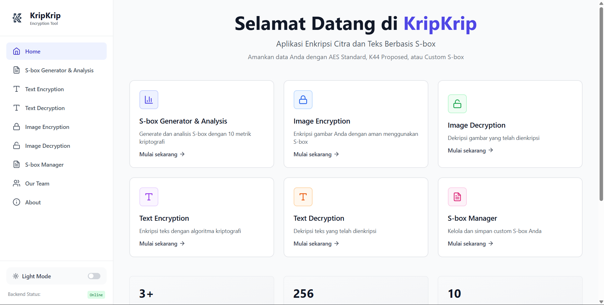
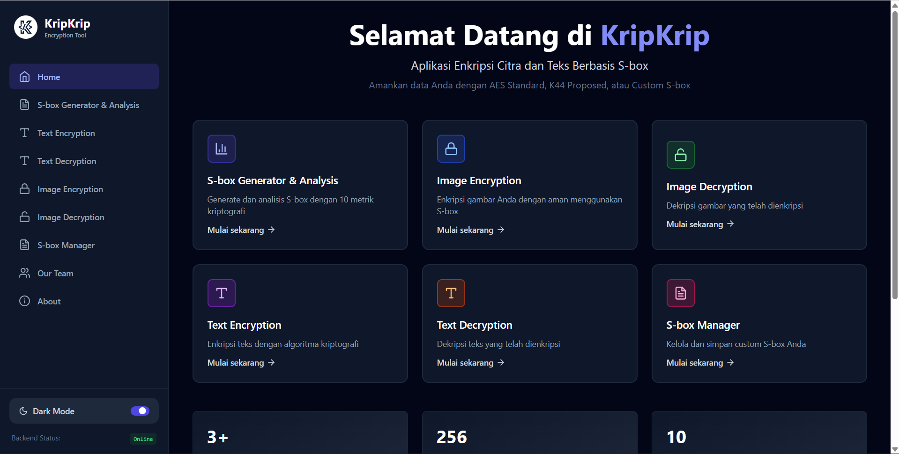
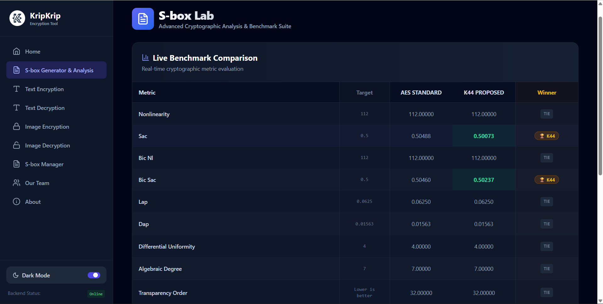
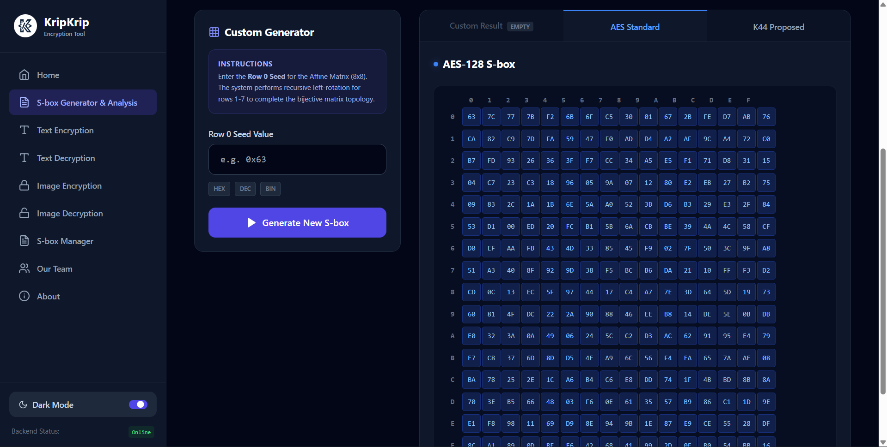
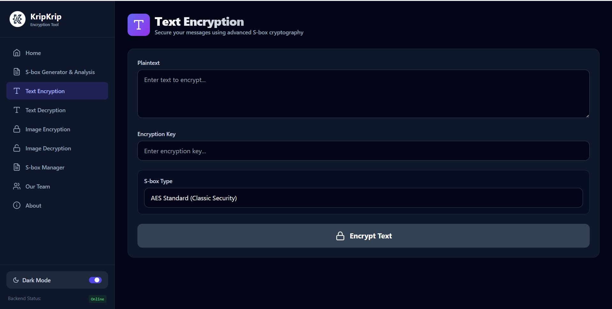
 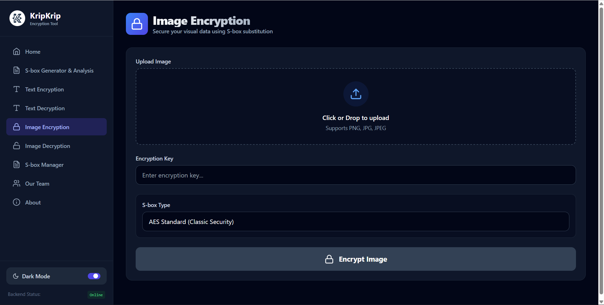
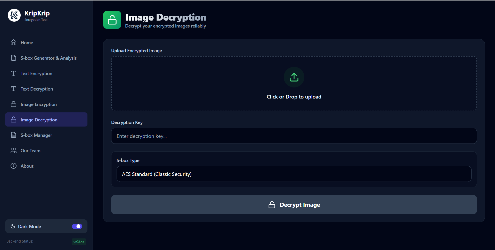
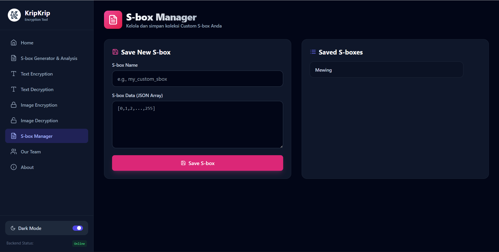
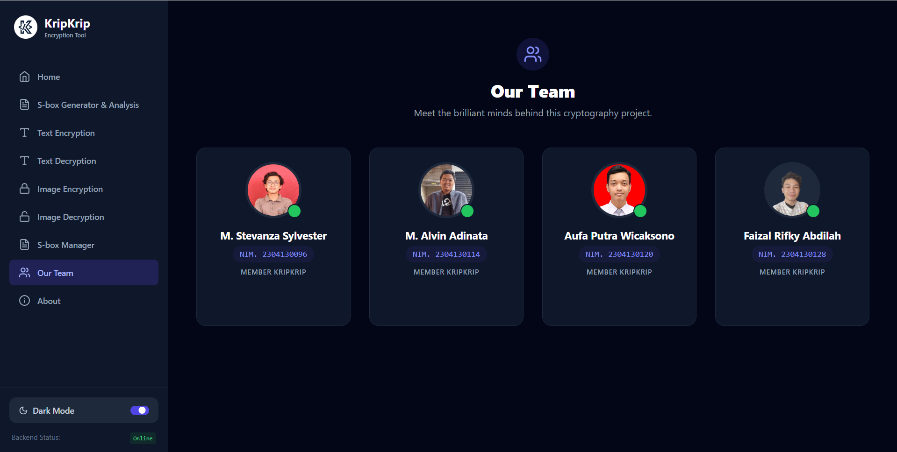
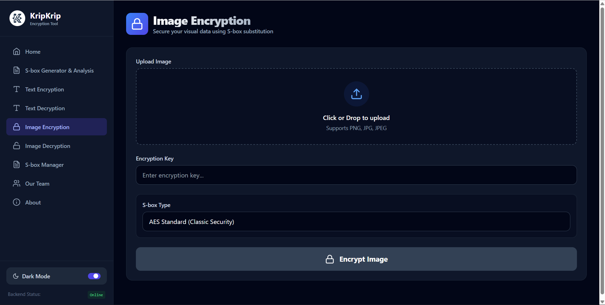
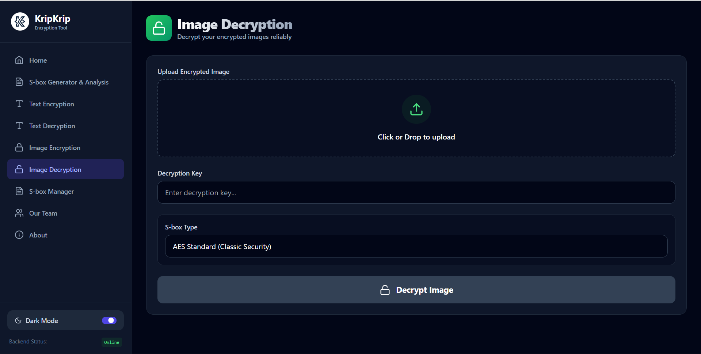
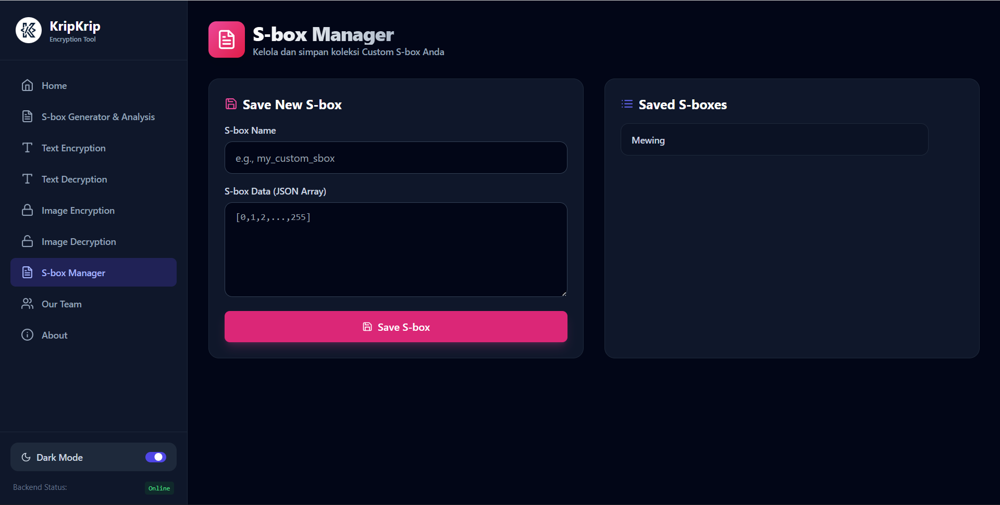
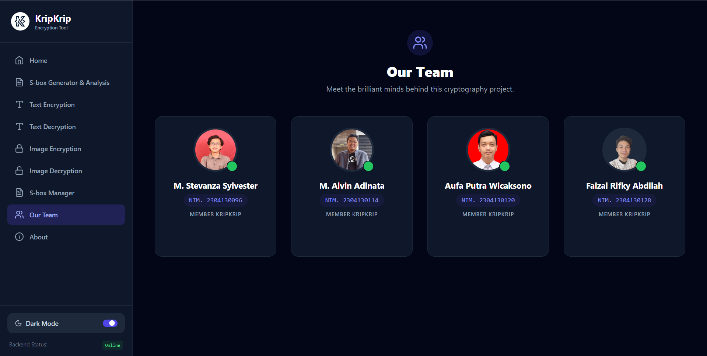
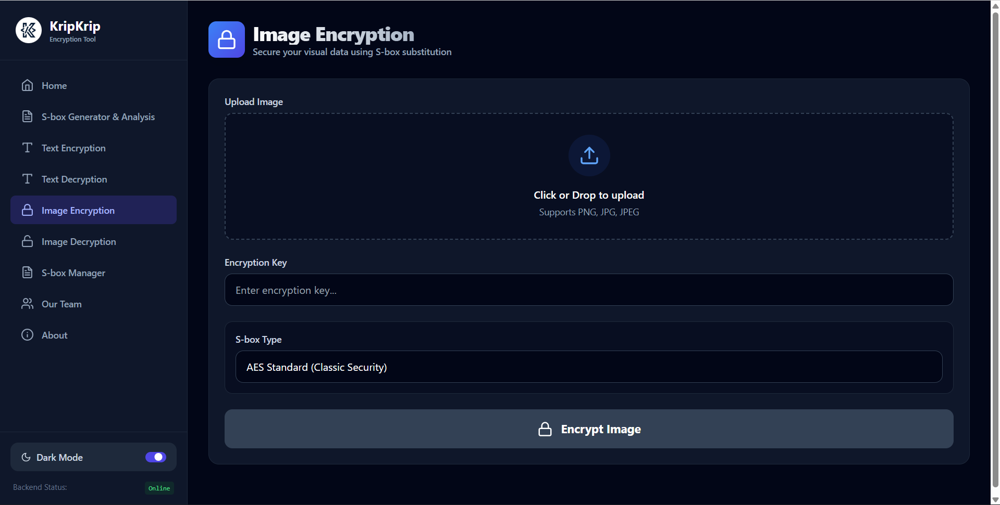
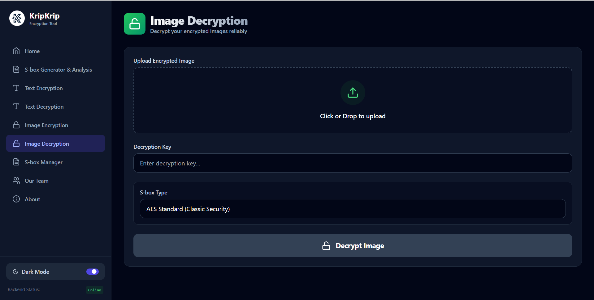
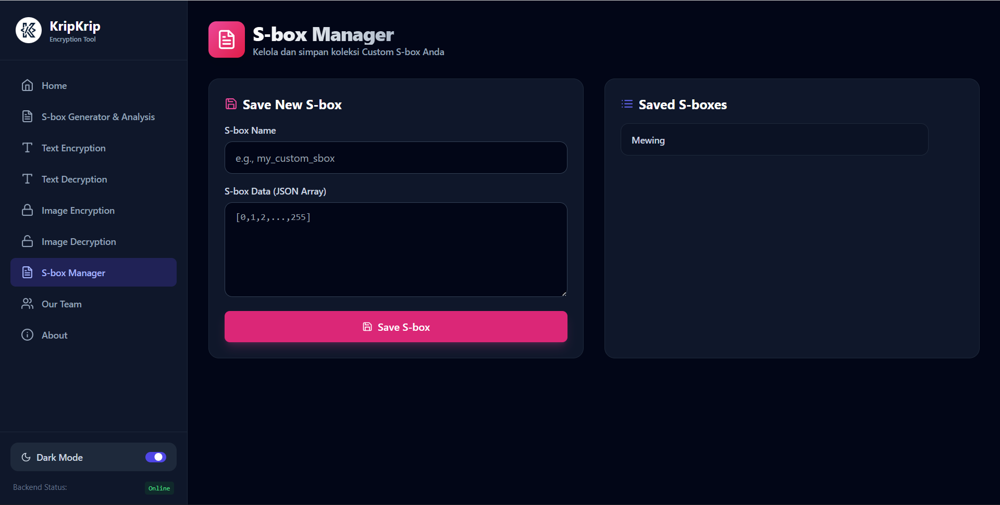
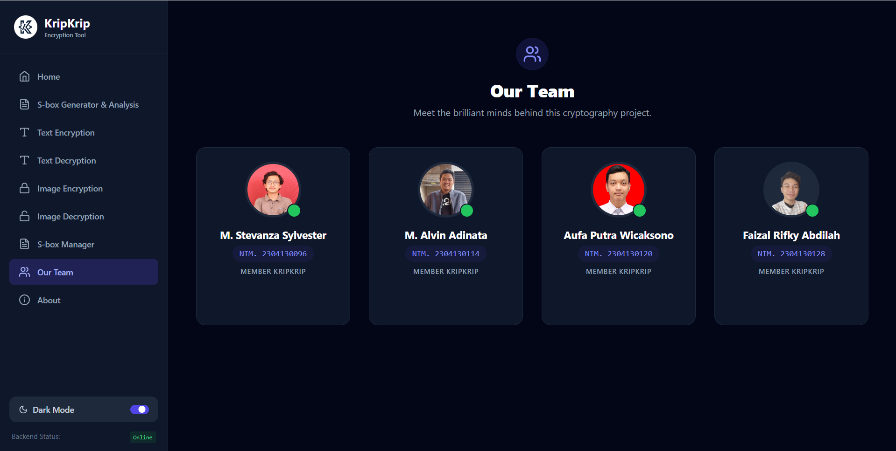
KripKrip Encryption Tool
Fast API
React
Cryptography
Python
Deskripsi Proyek
KripKrip adalah aplikasi enkripsi berbasis web yang dirancang untuk memberikan lapisan keamanan tambahan pada data digital. Proyek ini dikembangkan sebagai tugas universitas dengan fokus pada pengamanan informasi melalui metode enkripsi teks dan gambar yang efisien. Dengan mengintegrasikan FastAPI di sisi backend dan React di sisi frontend, aplikasi ini menawarkan performa yang cepat dalam memproses algoritma kriptografi yang kompleks.
Fitur Utama & Teknis
- Enkripsi Teks & Gambar: Kemampuan untuk mengonversi pesan teks dan file gambar menjadi format terenkripsi yang tidak dapat dibaca tanpa kunci yang tepat.
- Implementasi Algoritma Standar: Penggunaan algoritma keamanan yang kuat seperti AES-256 dan DES untuk menjamin integritas serta kerahasiaan data.
- Arsitektur Modern: Pemanfaatan FastAPI untuk penanganan API yang responsif dan React untuk antarmuka pengguna yang dinamis serta intuitif.
- Keamanan Data End-to-End: Proses pengolahan data yang dirancang khusus untuk memenuhi kebutuhan studi kasus kriptografi di lingkungan akademik.